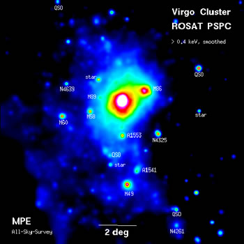

Credit: MPE
Located at a distance of ~16 Mpc and spanning 8 degrees on the sky, the Virgo cluster (named as such since it is seen in the direction of the constellation Virgo) is both the largest and nearest galaxy cluster to the Local Group. In fact, the Local Group is often considered to lie on the fringes of the Virgo cluster.
With a mass of approximately 100,000 billion solar masses, the cluster contains on the order of 2,000 galaxies, with many more spiral galaxies than is typical for a cluster of this size. The cluster also has three clearly identifiable sub-clusters (centred on M87, M86, and M49) and is therefore probably still in the process of forming. This is further supported by the irregular distribution of the X-ray halo of the cluster.
The mass of the Virgo cluster is so large that the motions of most galaxies in its neighbourhood are significantly influenced by it and drawn towards it (the ‘Virgo-centric flow’). Although the Local Group is current receding from the cluster, the mass of the Virgo cluster is so high that it is expected that the Local Group will eventually slow down and reverse direction, ultimately joining the cluster.